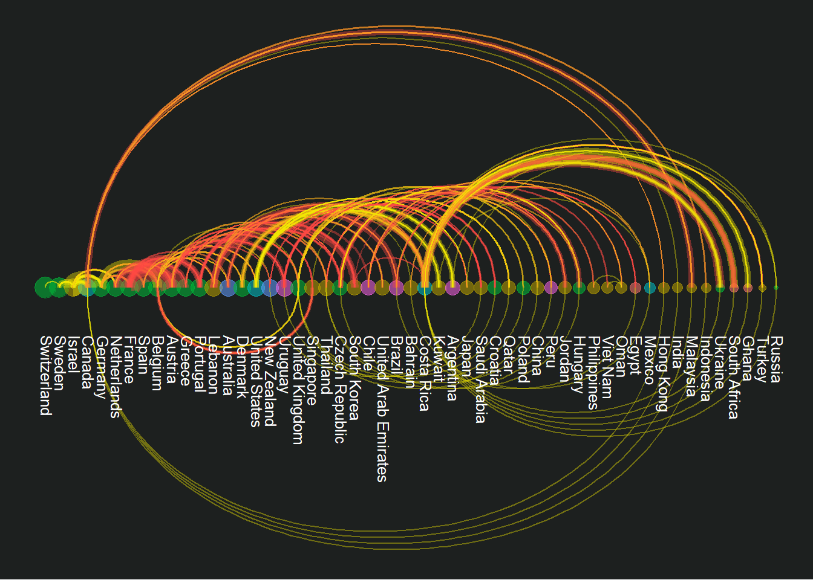
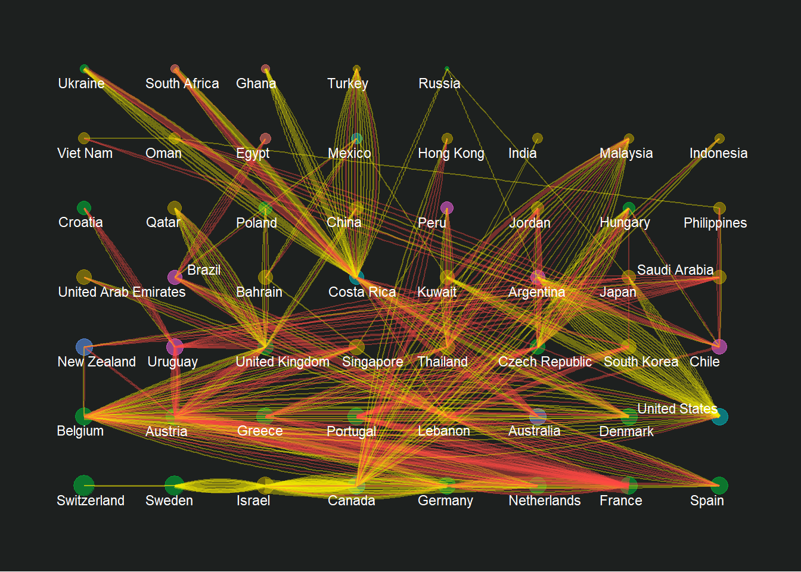
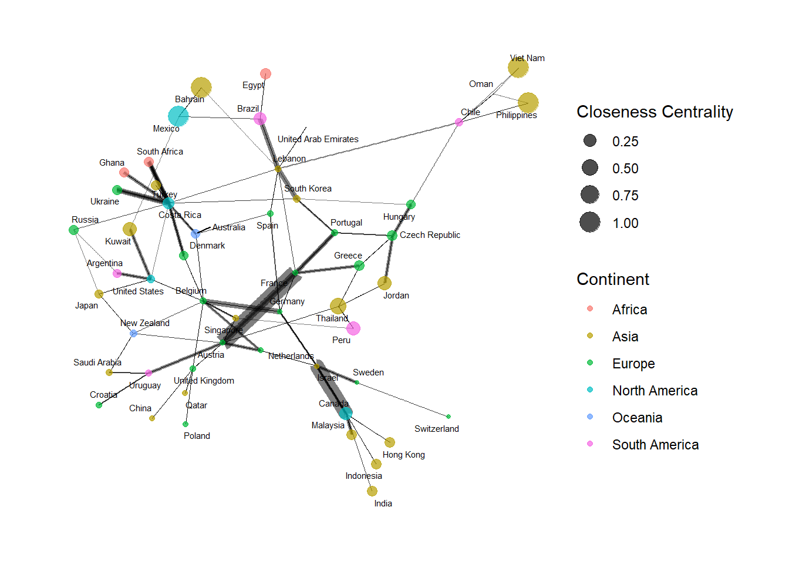
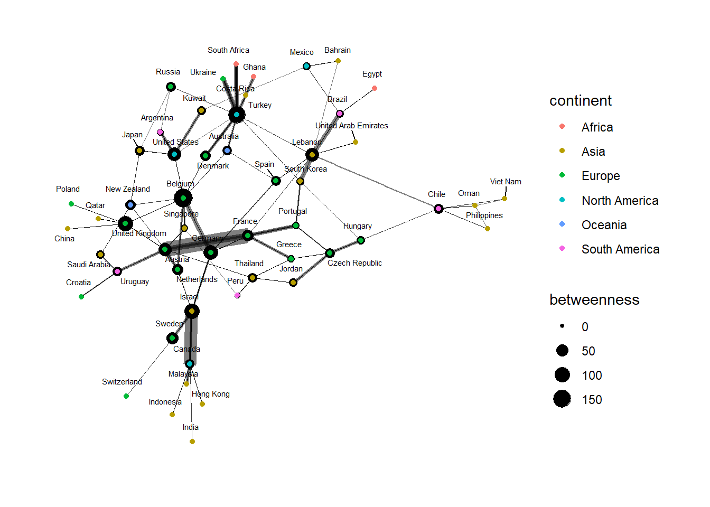

Reading layer `TM_WORLD_BORDERS-0.3' from data source
`C:\FirGhaz\ISSS608-VAA\Take-home_Exercises\Take-Home_Ex04\data\geospatial\TM_WORLD_BORDERS-0.3.shp'
using driver `ESRI Shapefile'
Simple feature collection with 246 features and 11 fields
Geometry type: MULTIPOLYGON
Dimension: XY
Bounding box: xmin: -180 ymin: -90 xmax: 180 ymax: 83.6236
Geodetic CRS: WGS 84Big Mac Index Choropleth and Trade Network Analysis
Take Home Exercise 04
This exercise aims to develop a Shiny application featuring an interactive choropleth map to analyze global trade networks in conjunction with the Big Mac Index. By integrating geographical data with economic indicators, the application will enable a visual exploration of how trade volumes and net exports correlate with price parity across different regions. The choropleth will serve as a dynamic tool to observe patterns, offering users the ability to drill down into country-specific trade connections and Index values.
The final deliverable will be a user-centric Shiny application, optimized for engagement and insight discovery. It will be complemented by a concise report summarizing the analytical narratives that emerge from the visualization. This endeavor will not only underscore the practicality of geospatial data in economic analysis but also aims to enrich the discourse on the implications of trade dynamics for market pricing mechanisms like the Big Mac Index.
1 Load Packages
2 EDA Trade on GEO


3 Visualising the Network: Exploratory Data Analysis
Emphasis here is to give them the option to play with the nodes, layout and geom_edge functions.
bmi2021_graph <- tbl_graph(nodes = bmi_node_2021,
edges = bmi_edges_2021,
directed = TRUE)
3.1 Network Centrality and Community Clustering
For our scope of the project, we will select 50+ countries with (1) significant trade activities and (2) complete data together with BMI(Index). A Trade Connectivity Index (TCI) will be calculated for each edge in the network will be calculated as follows:

Edge Weight Formula: Trade Connectivity Index (TCI)
This formula reflects the proportion of beef trade (exports and imports) in relation to the total trade volume between two countries. It highlights the significance of beef trade in the bilateral trade relationship, making it particularly relevant for analysing the trade networks with respect to the Big Mac Index. Hence, this will be applied to our network edges.
Beef Exports Value and Beef Imports Value refer to the value of beef traded between the two countries forming an edge in the network.
Total Exports Value and Total Imports Value encompass the total trade volume between these countries, providing a base to understand the relative importance of beef trade.
Node Attributes
For the nodes, you can maintain attributes that reflect each country’s economic and demographic scale, as well as its relevance to the Big Mac Index:
BMI Index: Directly use the Big Mac Index as a node attribute to represent the pricing level of a Big Mac, serving as a proxy for purchasing power parity.
Trade Value: This could be represented by either Total Exports or Total Imports to reflect the country’s engagement in global trade. Alternatively, you might use a composite measure such as GDP to reflect overall economic size and capacity.
We will compute the centrality and community clusters to determine their community clusters
In our exploration of global trade dynamics, specifically through the lens of beef exports and imports, we aim to uncover insights into the Big Mac Index, a whimsical gauge of purchasing power parity devised by The Economist. Analyzing beef trade patterns grants us a direct line of inquiry into the pricing mechanisms of the Big Mac, considering beef’s pivotal role in its composition. This focus allows us to parse the supply chain intricacies and market conditions that dictate the variability in Big Mac prices across different regions. The rationale behind this targeted analysis is to use beef trade as a tangible metric for understanding broader economic trends and pricing pressures that ultimately influence consumer goods’ costs.
To navigate this complex interplay, we’ve adopted a formula integrating critical trade data and economic indicators to model their relationship with the Big Mac Index. This formula captures the essence of trade balance, economic scale (granular and macro at the same time), and the specific impact of beef trade. It correlates net exports relative to GDP per capita with the proportions of beef exports and imports within total trade, providing a nuanced perspective on how trade dynamics influence market conditions and, by extension, Big Mac prices.
3.2 Computing Centrality

Degree Centrality Degree centrality measures the number of edges connected to a node. In directed networks, you can distinguish between in-degree and out-degree.
Degree centrality is a measure used in network analysis to quantify the importance or influence of a particular node within a network. It is based on the number of connections, or edges, that a node has to other nodes. The central concept behind degree centrality is simple: nodes with more connections are considered more central and potentially more influential within the network.
There are two types of degree centrality:
In-Degree Centrality: This measures the number of incoming connections to a node. It can be particularly relevant in directed networks where the direction of the connection matters. A high in-degree centrality indicates that a node is a major target within the network, receiving many connections from other nodes. This can signify a node of high interest or popularity.
Out-Degree Centrality: This measures the number of outgoing connections from a node. Like in-degree centrality, it is applicable in directed networks. A high out-degree centrality signifies that a node actively reaches out to many other nodes, which can indicate a source or distributor of information, goods, or influence within the network

Degree centrality is a straightforward but powerful concept in network analysis, useful for identifying key nodes that might play critical roles in the dissemination of information, disease transmission, social network influence, and more within a network.
Eigenvector Centrality Eigenvector centrality measures a node’s influence based on the principle that connections to high-scoring nodes contribute more to the score of the node in question.
Min. 1st Qu. Median Mean 3rd Qu. Max.
0.0000108 0.0010364 0.0061979 0.0611162 0.0231699 1.0000000 [1] 0.1068683 1.0000000 0.6944934 0.3322083 0.2881434 0.1124052
Eigenvector centrality is useful for identifying influential nodes in a network where connections to high-scoring nodes contribute more to the score of the node than equal connections to low-scoring nodes.
Closeness centrality
Putting the results in a dataframe.
In the Shiny App, we will allow the audience to explore these statistical methods to gain insights from the networks.
| Betweenness | Degree | EigenVector | Closeness |
|---|---|---|---|
| Nodes like the United States and Brazil have high betweenness centrality, suggesting that they act as significant connectors or bridges within the network, potentially controlling the flow of trade. | Nodes such as the United States and Brazil have high degrees, meaning they have numerous trade connections, possibly making them central hubs in the beef trade network. | The eigenvector centrality considers not just the number but the quality of connections. Nodes with high eigenvector centrality, like the United States and Australia, are connected to other well-connected nodes, hinting at influential trade cliques. | High closeness centrality for nodes like the United States and South Africa suggests that they can quickly interact or trade with all other nodes, indicating efficiency in their trade operations. |
| Some countries much higher centrality, which could mean the trade network relies heavily on these nodes, possibly creating vulnerability to disruptions. | Degree centrality can suggest potential market influence, with highly connected nodes being able to leverage their position for competitive advantage. | This measure reflects the potential for a node to access and influence the broader network through its connections. | Closeness centrality offers insight into the speed at which a country can react to supply and demand changes across the global network |
| Countries with lower betweenness centrality might have more direct trade links or may not be critical transit points within the network. | A spread of degree centrality across the network would indicate a democratized trading environment, but a concentration suggests a few key players dominate. | Low eigenvector centrality could indicate peripheral or less influential roles within the trading network, possibly representing newer or more specialized markets. | Low closeness centrality might point to potential delays in trade flows or inefficiencies, possibly due to geographical or logistical factor |
:::callout: Summary of Insights 1. Network Roles and Big Mac Pricing:
Countries central in the beef trade network, indicated by high betweenness or degree centrality, may have more stable and competitive beef pricing due to their numerous trade links, which could affect their local Big Mac prices. The presence of key influencers, as suggested by eigenvector centrality, could indicate the potential for price setting or market influence, which can trickle down to the pricing of beef and related products like the Big Mac.
- Trade Efficiency and Cost:
Closeness centrality can signal efficient trade practices and the potential for rapid adjustment to market changes, which could lead to more competitive and stable pricing for beef, affecting the Big Mac Index. Any delays or inefficiencies in beef imports could increase costs for local producers, potentially raising Big Mac prices in countries with lower closeness centrality.
- Cluster Analysis and Market Groupings:
Clustering helps identify groups of countries with similar trade patterns, which can show regional variations in Big Mac prices due to similarities in trade dynamics and economic profiles. Understanding these clusters can provide insights into regional pricing strategies for the Big Mac and indicate how economic or trade changes in one country might impact others within the same cluster. :::
3.3 Computing Community Indices
Tidygraph package inherits many of the community detection algorithms imbedded into igraph We will utilise 3 community detection algo: (1) Leading eigenvector (group_leading_eigen), (2) Walktrap and (3) Spinglass (group_spinglass).Some community algorithms are designed to take into account direction or weight, while others ignore it.
group_leading Eigenvector
WalkTrap The Walktrap algorithm is another method for detecting communities in graphs. It attempts to find densely connected subgraphs (communities) in a graph based on random walks. The idea is that short random walks tend to stay in the same community.

Spinglass

- Leading Eigenvector
Insight: This method often identifies communities based on the influence of nodes. Nodes with high eigenvector centrality are connected to other influential nodes, which can form a community. Implication for Big Mac Index: Communities identified by the Leading Eigenvector method might represent countries with influential trade relationships or economic ties that can impact the Big Mac Index through pricing standards, trade agreements, or shared economic policies.
- Walktrap
Insight: Walktrap finds communities by simulating random walks on the network, with the idea that walks are “trapped” within densely connected parts of the graph. Implication for Big Mac Index: The communities detected could reflect clusters of countries where trade flow is more frequent or robust, possibly due to geographic proximity or trade agreements, which in turn may affect the local pricing strategies included in the Big Mac Index.
- Spinglass
Insight: This method uses a spin model from statistical mechanics and is particularly good at detecting community structures where communities may be hierarchically nested. Implication for Big Mac Index: Spinglass communities may reflect complex and layered trade relationships, possibly uncovering hierarchies in economic interactions that could influence the Big Mac Index.
- Comparison Summary:
The Leading Eigenvector method might highlight dominant countries in trade that potentially set benchmarks for the Big Mac Index. The Walktrap method may reveal more about regional trading blocks or groups of countries with stronger internal trade links that could have similar Big Mac pricing due to shared market conditions. The Spinglass method can uncover more nuanced and multi-level communities, possibly highlighting intricate trade relationships and their cascading effects on the Big Mac Index.